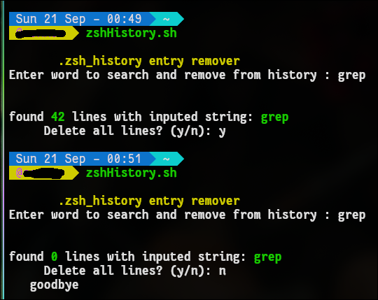
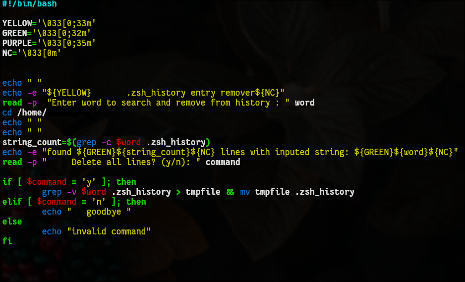

Z Shell History Editor
# # # # # # # # #
This is a cool bash script I wrote that is actually pretty useful to me. With zshell I have a plug-in that will remember past commands and you can auto-complete commands in the terminal. It's super duper handy and I love it, but sometimes it's annoying seeing it try to suggest a random old command I don't use much. (see below)...also below is some fastfetch customization for new terminal sessions
How it does this, is it stores the command as a line in a text file. So I made a bash script to "grep" the file, count the # of lines, as well as accept user command to delete all lines with the word in it. Basically like a search+destroy type thing. I've actually ended up using it quite a bit.

fairly simple script but quite useful.
